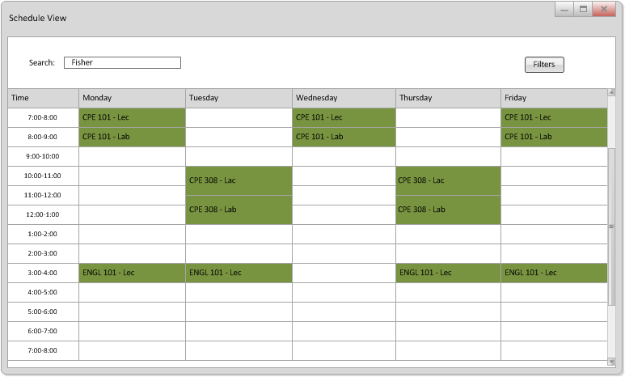

View Generated Schedule

<-- Prev
Top
Next -->
This screen shows a full schedule. The colors used throughout the sceens distringuish between different classes to help see their division. The user will be able to select colors based on their own preferences.